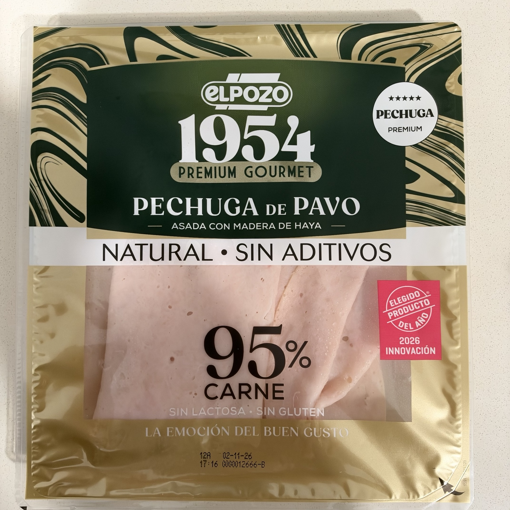
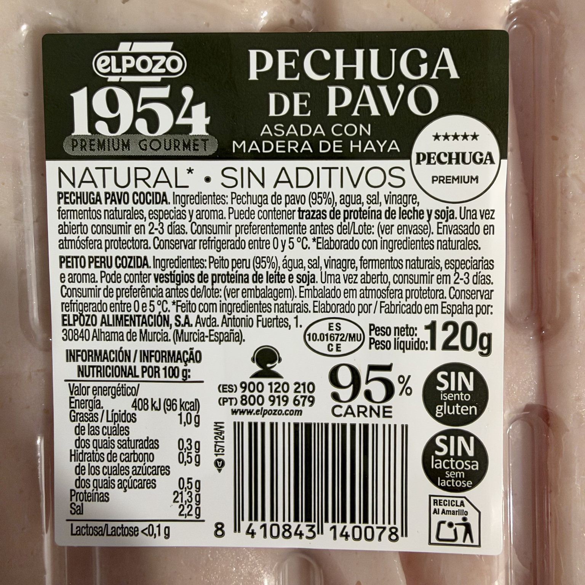

Pechuga de pavo asada con madera de haya
Pechuga de pavo cocida en lonchas, con un 95 % de pechuga de pavo. Asada con madera de haya, según el envase.
Envasada en atmósfera protectora. El envase declara «Natural · Sin aditivos», sin gluten y sin lactosa.
Precio de referencia
2,75 € · 22,92 €/kg
Dónde lo compro
Carrefour Los Rosales
30/09/2026 · Oferta 3×2: 1,83 €/envase · 15,28 €/kg
Lo uso en
Por qué lo uso
Aunque en casa consumimos poco fiambre, me gusta tenerlo en la nevera porque nos saca de apuros.
Lo elijo por su 95 % de pechuga de pavo y porque el envase declara «Sin aditivos».
Valoro que tenga una fecha de consumo preferente lejana al comprarlo; me facilita tener pavo a mano para una comida improvisada.
En mi cocina
Lo utilizo a menudo para preparar la fajita de francesa y pavo.
Composición
pechuga de pavo (95 %), agua, sal, vinagre, fermentos naturales, especias, aroma.
Conservar refrigerado entre 0 y 5 °C. Una vez abierto, consumir en 2–3 días.
Elaborado en España por ELPOZO ALIMENTACIÓN, S.A., Avda. Antonio Fuertes, 1, 30840 Alhama de Murcia (Murcia–España).
Puede contener trazas de proteína de leche, soja.
Valores por 100 g
| Energía | 408 kJ / 96 kcal |
|---|---|
| Grasas | 1 g |
| De las cuales saturadas | 0,3 g |
| Hidratos de carbono | 0,5 g |
| De los cuales azúcares | 0,5 g |
| Fibra | No declarada |
| Proteínas | 21,3 g |
| Sal | 2,2 g |

Valoración de Yuka
57 / 100 · Bueno
El envase declara «Sin aditivos», mientras que la captura de Yuka registra un aditivo de riesgo limitado, sin identificarlo. Se conservan ambas informaciones por separado; la captura no permite aclarar la discrepancia.
Aspectos positivos según Yuka
- Proteínas · 21,3 g por 100 g: Excelente cantidad de proteínas
- Valor energético · 96 kcal por 100 g: Bajo en calorías
- Grasas saturadas · 0,3 g por 100 g: Bajo en grasas saturadas
- Azúcar · 0,5 g por 100 g: Bajo en azúcar
Aspectos negativos según Yuka
- Aditivos · 1: Riesgo limitado; no se identifica el aditivo en la captura
- Sal · 2,2 g por 100 g: Demasiado salado
Fuente: captura de Yuka aportada el 18/10/2026.

Ingredientes y tabla nutricional del envase
